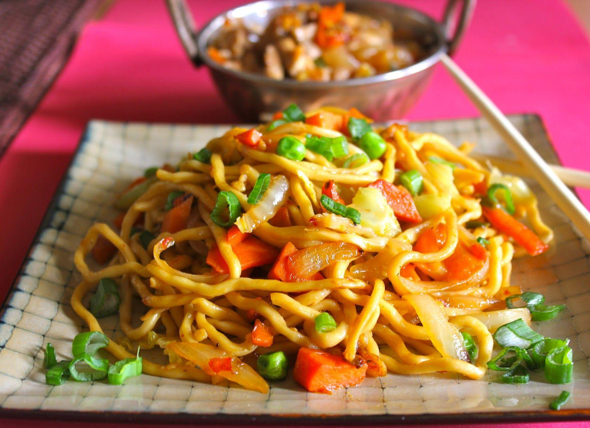
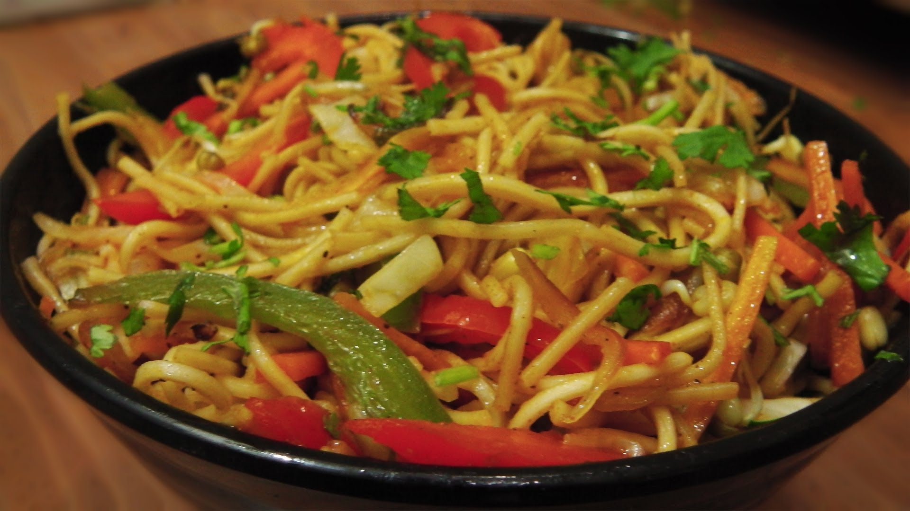
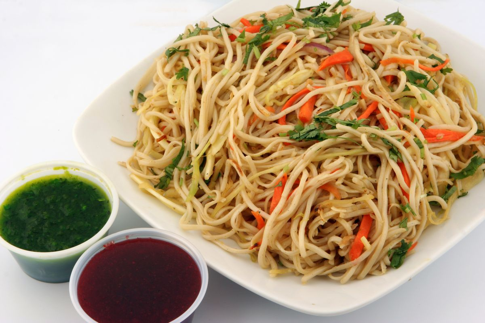

VEG NOODLES
面条
⭐⭐⭐⭐⭐
| 👨🍳 Recipe By : Vishal Kanwar |
🌞Difficulty Level : Easy |
| ⏰ Prep Time : 20 mins |
⏰ Total Cook Time : 30 mins |

Veg Hakka Noodles Recipe : The best of Chinese cuisine right in your
kitchen. One of the most popular dish from the cuisine,
Vegetable hakka
noodles is loved most by the kids and what's better than making it at
home for them. This easy and quick recipe can be
made for a light
brunch or even packed in their tiffin hassle free and without even
realizing they'll be having all the essential vegetables together!

HOW TO MAKE VEG NOODLES
INGREDIENTS OF VEG NOODLES
<- Noodles
- 1 tsp Salt
- 1 tsp Oil
- 1 tsp Garlic paste
- 1 tsp Ginger paste
- 1/2 Cup Beans
- 1/2 Cup Carrot, chopped
- 1/2 Cup Capsicum, chopped
- 1/2 Cup Spring onion, chopped
- 2 Tbsp Soy sauce
- 2 Tbsp Green chilli sauce
- 1 Tbsp Tomato sauce
MAIN COURSE
- Boil the noodles in a pan till it starts to simmer.
- Add salt and some oil to the boiling noodles.
- When the noodles start to e a little sticky, drain the excess water and wash them in cold water.
- In another pan, heat about 3 teaspoon of oil.
- Put ginger paste followed by garlic paste. Saute them well till golden brown.
- Now add all the vegetables to the pan.
- Saute them well and add soy sauce, green chilli sauce and tomato sauce.
- Mix them well and now add the boiled noodles to them.
- Mix them thoroughly with the vegetables.
- Serve hot.
So,this is the short and easiest recipe to make delicious veg noodles
Now,make it at your home and enjoy with your family!
